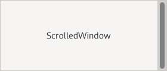

Gtk.ScrolledWindow¶
Example¶
- Subclasses
None
Methods¶
- Inherited
Gtk.Widget (181), GObject.Object (37), Gtk.Accessible (15), Gtk.Buildable (1)
- Structs
class |
|
|
|
|
|
|
|
|
|
|
|
|
|
|
|
|
|
|
|
|
|
|
|
|
|
|
|
|
|
|
|
|
|
Virtual Methods¶
Properties¶
- Inherited
Name |
Type |
Flags |
Short Description |
|---|---|---|---|
r/w/en |
|||
r/w/c/en |
|||
r/w/en |
|||
r/w/en |
|||
r/w/en |
|||
r/w/en |
|||
r/w/en |
|||
r/w/en |
|||
r/w/en |
|||
r/w/en |
|||
r/w/en |
|||
r/w/en |
|||
r/w/c/en |
|||
r/w/en |
|||
r/w/en |
Signals¶
- Inherited
Name |
Short Description |
|---|---|
Emitted whenever user initiated scrolling makes the scrolled window firmly surpass the limits defined by the adjustment in that orientation. |
|
Emitted whenever user-initiated scrolling makes the scrolled window exactly reach the lower or upper limits defined by the adjustment in that orientation. |
|
Emitted when focus is moved away from the scrolled window by a keybinding. |
|
Emitted when a keybinding that scrolls is pressed. |
Fields¶
- Inherited
Class Details¶
- class Gtk.ScrolledWindow(**kwargs)¶
- Bases
- Abstract
No
GtkScrolledWindowis a container that makes its child scrollable.It does so using either internally added scrollbars or externally associated adjustments, and optionally draws a frame around the child.
Widgets with native scrolling support, i.e. those whose classes implement the [iface`Gtk`.Scrollable] interface, are added directly. For other types of widget, the class [class`Gtk`.Viewport] acts as an adaptor, giving scrollability to other widgets. [method`Gtk`.ScrolledWindow.set_child] intelligently accounts for whether or not the added child is a
GtkScrollable. If it isn’t, then it wraps the child in aGtkViewport. Therefore, you can just add any child widget and not worry about the details.If [method`Gtk`.ScrolledWindow.set_child] has added a
GtkViewportfor you, it will be automatically removed when you unset the child. Unless [property`Gtk`.ScrolledWindow:hscrollbar-policy] and [property`Gtk`.ScrolledWindow:vscrollbar-policy] areGtk.PolicyType.NEVERorGtk.PolicyType.EXTERNAL,GtkScrolledWindowadds internalGtkScrollbarwidgets around its child. The scroll position of the child, and if applicable the scrollbars, is controlled by the [property`Gtk`.ScrolledWindow:hadjustment] and [property`Gtk`.ScrolledWindow:vadjustment] that are associated with theGtkScrolledWindow. See the docs on [class`Gtk`.Scrollbar] for the details, but note that the “step_increment” and “page_increment” fields are only effective if the policy causes scrollbars to be present.If a
GtkScrolledWindowdoesn’t behave quite as you would like, or doesn’t have exactly the right layout, it’s very possible to set up your own scrolling withGtkScrollbarand for example aGtkGrid.- Touch support
GtkScrolledWindowhas built-in support for touch devices. When a touchscreen is used, swiping will move the scrolled window, and will expose ‘kinetic’ behavior. This can be turned off with the [property`Gtk`.ScrolledWindow:kinetic-scrolling] property if it is undesired.GtkScrolledWindowalso displays visual ‘overshoot’ indication when the content is pulled beyond the end, and this situation can be captured with the [signal`Gtk`.ScrolledWindow::edge-overshot] signal.If no mouse device is present, the scrollbars will overlaid as narrow, auto-hiding indicators over the content. If traditional scrollbars are desired although no mouse is present, this behaviour can be turned off with the [property`Gtk`.ScrolledWindow:overlay-scrolling] property.
- CSS nodes
GtkScrolledWindowhas a main CSS node with name scrolledwindow. It gets a .frame style class added when [property`Gtk`.ScrolledWindow:has-frame] isTrue.It uses subnodes with names overshoot and undershoot to draw the overflow and underflow indications. These nodes get the .left, .right, .top or .bottom style class added depending on where the indication is drawn.
GtkScrolledWindowalso sets the positional style classes (.left, .right, .top, .bottom) and style classes related to overlay scrolling (.overlay-indicator, .dragging, .hovering) on its scrollbars.If both scrollbars are visible, the area where they meet is drawn with a subnode named junction.
- Accessibility
Until GTK 4.10,
GtkScrolledWindowused theGTK_ACCESSIBLE_ROLE_GROUProle.Starting from GTK 4.12,
GtkScrolledWindowuses theGTK_ACCESSIBLE_ROLE_GENERICrole.- get_child()[source]¶
- Returns
the child widget of self
- Return type
Gtk.WidgetorNone
Gets the child widget of self.
- get_hadjustment()[source]¶
- Returns
the horizontal
GtkAdjustment- Return type
Returns the horizontal scrollbar’s adjustment.
This is the adjustment used to connect the horizontal scrollbar to the child widget’s horizontal scroll functionality.
- get_hscrollbar()[source]¶
- Returns
the horizontal scrollbar of the scrolled window.
- Return type
Returns the horizontal scrollbar of self.
- get_kinetic_scrolling()[source]¶
- Returns
the scrolling behavior flags.
- Return type
Returns the specified kinetic scrolling behavior.
- get_max_content_height()[source]¶
- Returns
the maximum content height, or -1
- Return type
Returns the maximum content height set.
- get_max_content_width()[source]¶
- Returns
the maximum content width, or -1
- Return type
Returns the maximum content width set.
- get_min_content_height()[source]¶
- Returns
the minimal content height
- Return type
Gets the minimal content height of self.
- get_min_content_width()[source]¶
- Returns
the minimum content width
- Return type
Gets the minimum content width of self.
- get_overlay_scrolling()[source]¶
-
Returns whether overlay scrolling is enabled for this scrolled window.
- get_placement()[source]¶
- Returns
the current placement value.
- Return type
Gets the placement of the contents with respect to the scrollbars.
- get_policy()[source]¶
- Returns
- hscrollbar_policy
location to store the policy for the horizontal scrollbar
- vscrollbar_policy
location to store the policy for the vertical scrollbar
- Return type
(hscrollbar_policy:
Gtk.PolicyType, vscrollbar_policy:Gtk.PolicyType)
Retrieves the current policy values for the horizontal and vertical scrollbars.
See [method`Gtk`.ScrolledWindow.set_policy].
- get_propagate_natural_height()[source]¶
- Returns
whether natural height propagation is enabled.
- Return type
Reports whether the natural height of the child will be calculated and propagated through the scrolled window’s requested natural height.
- get_propagate_natural_width()[source]¶
- Returns
whether natural width propagation is enabled.
- Return type
Reports whether the natural width of the child will be calculated and propagated through the scrolled window’s requested natural width.
- get_vadjustment()[source]¶
- Returns
the vertical
GtkAdjustment- Return type
Returns the vertical scrollbar’s adjustment.
This is the adjustment used to connect the vertical scrollbar to the child widget’s vertical scroll functionality.
- get_vscrollbar()[source]¶
- Returns
the vertical scrollbar of the scrolled window.
- Return type
Returns the vertical scrollbar of self.
- set_child(child)[source]¶
- Parameters
child (
Gtk.WidgetorNone) – the child widget
Sets the child widget of self.
- set_hadjustment(hadjustment)[source]¶
- Parameters
hadjustment (
Gtk.AdjustmentorNone) – theGtkAdjustmentto use, orNoneto create a new one
Sets the
GtkAdjustmentfor the horizontal scrollbar.
- set_has_frame(has_frame)[source]¶
- Parameters
has_frame (
bool) – whether to draw a frame around scrolled window contents
Changes the frame drawn around the contents of self.
- set_kinetic_scrolling(kinetic_scrolling)[source]¶
-
Turns kinetic scrolling on or off.
Kinetic scrolling only applies to devices with source
Gdk.InputSource.TOUCHSCREEN.
- set_max_content_height(height)[source]¶
- Parameters
height (
int) – the maximum content height
Sets the maximum height that self should keep visible.
The self will grow up to this height before it starts scrolling the content.
It is a programming error to set the maximum content height to a value smaller than [property`Gtk`.ScrolledWindow:min-content-height].
- set_max_content_width(width)[source]¶
- Parameters
width (
int) – the maximum content width
Sets the maximum width that self should keep visible.
The self will grow up to this width before it starts scrolling the content.
It is a programming error to set the maximum content width to a value smaller than [property`Gtk`.ScrolledWindow:min-content-width].
- set_min_content_height(height)[source]¶
- Parameters
height (
int) – the minimal content height
Sets the minimum height that self should keep visible.
Note that this can and (usually will) be smaller than the minimum size of the content.
It is a programming error to set the minimum content height to a value greater than [property`Gtk`.ScrolledWindow:max-content-height].
- set_min_content_width(width)[source]¶
- Parameters
width (
int) – the minimal content width
Sets the minimum width that self should keep visible.
Note that this can and (usually will) be smaller than the minimum size of the content.
It is a programming error to set the minimum content width to a value greater than [property`Gtk`.ScrolledWindow:max-content-width].
- set_overlay_scrolling(overlay_scrolling)[source]¶
- Parameters
overlay_scrolling (
bool) – whether to enable overlay scrolling
Enables or disables overlay scrolling for this scrolled window.
- set_placement(window_placement)[source]¶
- Parameters
window_placement (
Gtk.CornerType) – position of the child window
Sets the placement of the contents with respect to the scrollbars for the scrolled window.
The default is
Gtk.CornerType.TOP_LEFT, meaning the child is in the top left, with the scrollbars underneath and to the right. Other values in [enum`Gtk`.CornerType] areGtk.CornerType.TOP_RIGHT,Gtk.CornerType.BOTTOM_LEFT, andGtk.CornerType.BOTTOM_RIGHT.See also [method`Gtk`.ScrolledWindow.get_placement] and [method`Gtk`.ScrolledWindow.unset_placement].
- set_policy(hscrollbar_policy, vscrollbar_policy)[source]¶
- Parameters
hscrollbar_policy (
Gtk.PolicyType) – policy for horizontal barvscrollbar_policy (
Gtk.PolicyType) – policy for vertical bar
Sets the scrollbar policy for the horizontal and vertical scrollbars.
The policy determines when the scrollbar should appear; it is a value from the [enum`Gtk`.PolicyType] enumeration. If
Gtk.PolicyType.ALWAYS, the scrollbar is always present; ifGtk.PolicyType.NEVER, the scrollbar is never present; ifGtk.PolicyType.AUTOMATIC, the scrollbar is present only if needed (that is, if the slider part of the bar would be smaller than the trough — the display is larger than the page size).
- set_propagate_natural_height(propagate)[source]¶
- Parameters
propagate (
bool) – whether to propagate natural height
Sets whether the natural height of the child should be calculated and propagated through the scrolled window’s requested natural height.
- set_propagate_natural_width(propagate)[source]¶
- Parameters
propagate (
bool) – whether to propagate natural width
Sets whether the natural width of the child should be calculated and propagated through the scrolled window’s requested natural width.
- set_vadjustment(vadjustment)[source]¶
- Parameters
vadjustment (
Gtk.AdjustmentorNone) – theGtkAdjustmentto use, orNoneto create a new one
Sets the
GtkAdjustmentfor the vertical scrollbar.
- unset_placement()[source]¶
Unsets the placement of the contents with respect to the scrollbars.
If no window placement is set for a scrolled window, it defaults to
Gtk.CornerType.TOP_LEFT.
Signal Details¶
- Gtk.ScrolledWindow.signals.edge_overshot(scrolled_window, pos)¶
- Signal Name
edge-overshot- Flags
- Parameters
scrolled_window (
Gtk.ScrolledWindow) – The object which received the signalpos (
Gtk.PositionType) – edge side that was hit
Emitted whenever user initiated scrolling makes the scrolled window firmly surpass the limits defined by the adjustment in that orientation.
A similar behavior without edge resistance is provided by the [signal`Gtk`.ScrolledWindow::edge-reached] signal.
Note: The pos argument is LTR/RTL aware, so callers should be aware too if intending to provide behavior on horizontal edges.
- Gtk.ScrolledWindow.signals.edge_reached(scrolled_window, pos)¶
- Signal Name
edge-reached- Flags
- Parameters
scrolled_window (
Gtk.ScrolledWindow) – The object which received the signalpos (
Gtk.PositionType) – edge side that was reached
Emitted whenever user-initiated scrolling makes the scrolled window exactly reach the lower or upper limits defined by the adjustment in that orientation.
A similar behavior with edge resistance is provided by the [signal`Gtk`.ScrolledWindow::edge-overshot] signal.
Note: The pos argument is LTR/RTL aware, so callers should be aware too if intending to provide behavior on horizontal edges.
- Gtk.ScrolledWindow.signals.move_focus_out(scrolled_window, direction_type)¶
- Signal Name
move-focus-out- Flags
- Parameters
scrolled_window (
Gtk.ScrolledWindow) – The object which received the signaldirection_type (
Gtk.DirectionType) – eitherGtk.DirectionType.TAB_FORWARDorGtk.DirectionType.TAB_BACKWARD
Emitted when focus is moved away from the scrolled window by a keybinding.
This is a keybinding signal.
The default bindings for this signal are
Ctrl + Tabto move forward andCtrl + Shift + Tabto move backward.
- Gtk.ScrolledWindow.signals.scroll_child(scrolled_window, scroll, horizontal)¶
- Signal Name
scroll-child- Flags
- Parameters
scrolled_window (
Gtk.ScrolledWindow) – The object which received the signalscroll (
Gtk.ScrollType) – aGtkScrollTypedescribing how much to scrollhorizontal (
bool) – whether the keybinding scrolls the child horizontally or not
- Return type
Emitted when a keybinding that scrolls is pressed.
This is a keybinding signal.
The horizontal or vertical adjustment is updated which triggers a signal that the scrolled window’s child may listen to and scroll itself.
Property Details¶
- Gtk.ScrolledWindow.props.child¶
- Name
child- Type
- Default Value
- Flags
The child widget.
- Gtk.ScrolledWindow.props.hadjustment¶
- Name
hadjustment- Type
- Default Value
- Flags
- Gtk.ScrolledWindow.props.has_frame¶
- Name
has-frame- Type
- Default Value
- Flags
Whether to draw a frame around the contents.
- Gtk.ScrolledWindow.props.hscrollbar_policy¶
- Name
hscrollbar-policy- Type
- Default Value
- Flags
When the horizontal scrollbar is displayed.
Use [method`Gtk`.ScrolledWindow.set_policy] to set this property.
- Gtk.ScrolledWindow.props.kinetic_scrolling¶
- Name
kinetic-scrolling- Type
- Default Value
- Flags
Whether kinetic scrolling is enabled or not.
Kinetic scrolling only applies to devices with source
Gdk.InputSource.TOUCHSCREEN.
- Gtk.ScrolledWindow.props.max_content_height¶
- Name
max-content-height- Type
- Default Value
-1- Flags
The maximum content height of scrolled_window.
- Gtk.ScrolledWindow.props.max_content_width¶
- Name
max-content-width- Type
- Default Value
-1- Flags
The maximum content width of scrolled_window.
- Gtk.ScrolledWindow.props.min_content_height¶
- Name
min-content-height- Type
- Default Value
-1- Flags
The minimum content height of scrolled_window.
- Gtk.ScrolledWindow.props.min_content_width¶
- Name
min-content-width- Type
- Default Value
-1- Flags
The minimum content width of scrolled_window.
- Gtk.ScrolledWindow.props.overlay_scrolling¶
- Name
overlay-scrolling- Type
- Default Value
- Flags
Whether overlay scrolling is enabled or not.
If it is, the scrollbars are only added as traditional widgets when a mouse is present. Otherwise, they are overlaid on top of the content, as narrow indicators.
Note that overlay scrolling can also be globally disabled, with the [property`Gtk`.Settings:gtk-overlay-scrolling] setting.
- Gtk.ScrolledWindow.props.propagate_natural_height¶
- Name
propagate-natural-height- Type
- Default Value
- Flags
Whether the natural height of the child should be calculated and propagated through the scrolled window’s requested natural height.
This is useful in cases where an attempt should be made to allocate exactly enough space for the natural size of the child.
- Gtk.ScrolledWindow.props.propagate_natural_width¶
- Name
propagate-natural-width- Type
- Default Value
- Flags
Whether the natural width of the child should be calculated and propagated through the scrolled window’s requested natural width.
This is useful in cases where an attempt should be made to allocate exactly enough space for the natural size of the child.
- Gtk.ScrolledWindow.props.vadjustment¶
- Name
vadjustment- Type
- Default Value
- Flags
- Gtk.ScrolledWindow.props.vscrollbar_policy¶
- Name
vscrollbar-policy- Type
- Default Value
- Flags
When the vertical scrollbar is displayed.
Use [method`Gtk`.ScrolledWindow.set_policy] to set this property.
- Gtk.ScrolledWindow.props.window_placement¶
- Name
window-placement- Type
- Default Value
- Flags
Where the contents are located with respect to the scrollbars.